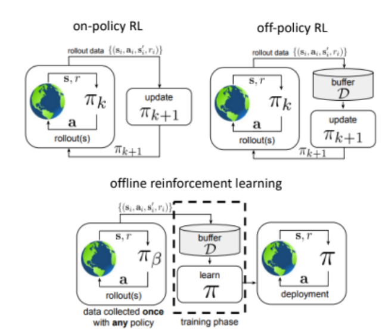

Projects
-
Mildly Conservative Q-Learning in Offline Reinforcement Learning for Grid World Navigation:
Offline reinforcement learning (RL) enables policy training using pre-collected datasets, minimizing online exploration. This project evaluated offline RL algorithms for grid-world navigation, with a custom dataset generated using the A* path-planning algorithm on a 2D occupancy grid derived from a realistic environment map created in the Gazebo Simulation Environment using TurtleBot3. The Mildly Conservative Q-Learning (MCQ) algorithm and other methods, including Behavior Cloning (BC), Advantage-Weighted Regression (AWR), Batch-Constrained Q-Learning (BCQL), and Conservative Q-Learning (CQL), were implemented and compared. Results showed that MCQ and CQL failed to create policies that effectively guided the robot to goal, achieving ~0% success rates despite hyperparameter tuning using Optuna. BC achieved a 79% success rate, which improved to 94% with tuning, while AWR reached 88%. Initial results with BCQL showed promise with a 52% success rate, but its hyperparameters could not be fully tuned due to time constraints. In addition, Twin Delayed Deep Deterministic Policy Gradient + Behavior Cloning (TD3+BC) was tested in the PointMaze environment, revealing significant reward degradation when faced with out-of-distribution (OOD) actions. These results highlight the challenges of offline RL in navigation tasks and emphasize the need for robust algorithms and effective hyperparameter tuning. Future work includes validating policies on TurtleBot3 in Gazebo and addressing out-of-distribution scenarios. View Term Paper
- here.
-
Autonomous Mapping and Navigation Using TurtleBot3:
Autonomous mapping and navigation are critical capabilities for mobile robots. This project utilized the TurtleBot3 platform to implement algorithms for simultaneous localization and mapping (SLAM), static and dynamic obstacle avoidance, and autonomous path planning. Using a frontier-based exploration approach, the robot systematically explored unknown environments to build a map by identifying unexplored regions and planning optimal paths using the A* algorithm. Real-time obstacle detection was integrated to enable dynamic replanning when encountering moving obstacles, ensuring robust and collision-free navigation.
The project successfully demonstrated the potential of combining SLAM and path-planning techniques to create intelligent robotic systems capable of navigating and mapping complex environments autonomously. Future work could include deploying the system in outdoor environments and optimizing the algorithms for faster real-time performance.
Demonstration Videos:

Source: Offline RL Tutorial- NeurIPS 2020